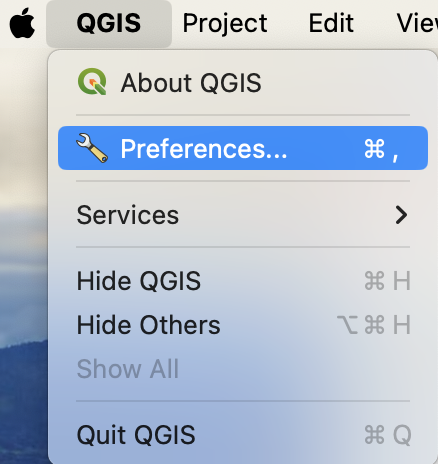
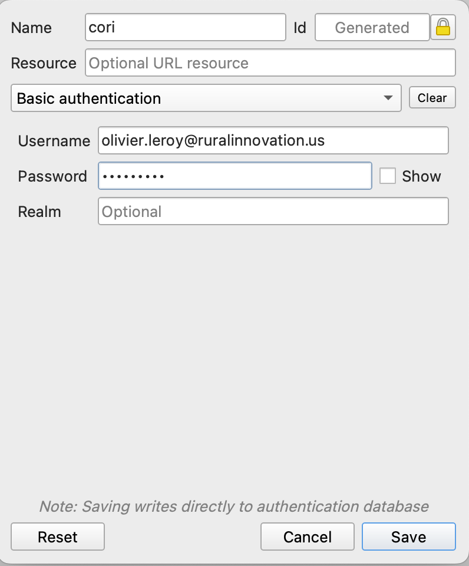
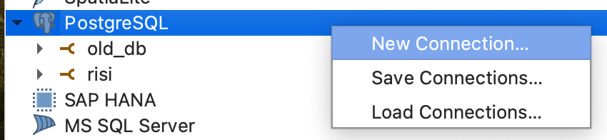
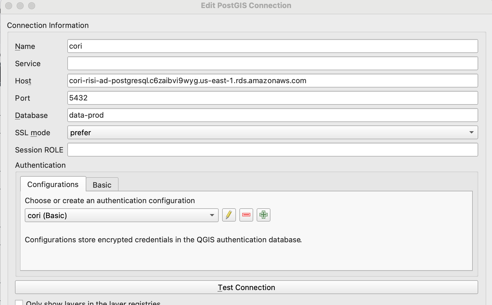

This will include some materials for the use of QGIS
Connecting QGIS to CORI RDS DB
In QGIS:
QGIS->Preferences->Authentication

- In Authentication use the green ➕ to add a new way of doing it.
If it is the first time it will ask you to set up a master password (I think it is just for mac).
Use the drop down menu to select
Basic authenticationPick a name: I am using
coriProvide the correct Username and Password
It should look like this:

In QGIS Browser:
Right click on
PostgreSQLNew connections

Pick a name (again I am using
CORI)Host: our aws RDS
Port: we are using the default one (5432)
Database name: the name of the DB
In
Athenticationselect the previous configurations we have doneSSL_mode need to be set on “Prefer”
You can “Test Connection”

If it is good you can press ok if not review the Host name other parameters.
You should be able to browse schemas and tables from the database.
Resources:
QGIS LTR Doc: https://docs.qgis.org/3.28/en/docs/user_manual/auth_system/auth_overview.html
To interact with QGIS in R: https://r-spatial.github.io/qgisprocess/